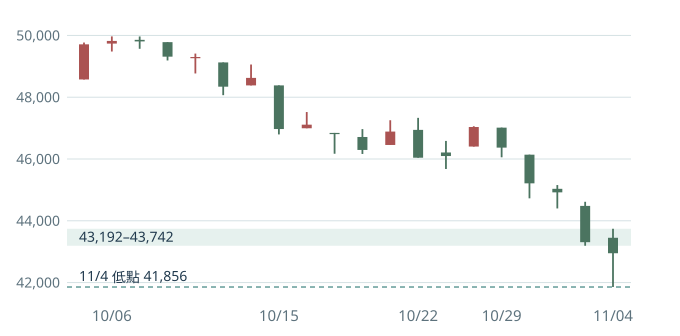

對跨日做多，我仍判台股處在 Risk-Off。11/4 加權從低點反彈 1,093 點，上市櫃跌停也從 74 家減到 4 家，顯示急跌後已有承接。加權和櫃買收盤仍比前一天低，站上季線的股票更少，電子領導股也分化。現階段適合觀察哪些個股先修復，整體多頭曝險仍偏防守。
發布於 11/05 開盤前，台股以 11/04 正規盤及證交所盤後資料為準。使用 J Law 的價格反應、市寬、領導與交易延續框架，盤勢標籤和改判條件為本文的台股判斷。
指數與市寬

| 指標 | 11/3 | 11/4 |
|---|---|---|
| 加權收盤 | 43,307.54（−3.59%） | 42,948.91（−0.83%） |
| 櫃買收盤 | 345.52（−6.42%） | 343.50（−0.58%） |
| 上市股票上漲／下跌 | 58／1,000 | 438／544 |
| 上櫃股票上漲／下跌 | 59／782 | 397／416 |
| 上市櫃站上季線 | 19.7% | 18.9% |
| 上市全市場成交金額 | 10,020.36 億元 | 11,769.30 億元 |
加權從 10/6 收盤高點 49,822.55 回落約 13.8%，最近 5 個交易日跌 8.69%。11/4 收盤低於 11/3 的盤中低點 43,191.58，也低於 20 日線 47,047 與 60 日線 46,538。櫃買本月前三個交易日跌約 7.2%，比加權的 5.0% 更弱。11/4 全市場成交金額約為近 20 日平均的 1.20 倍，包含零股、盤後定價與鉅額等。同日報導常見的 11,148.21 億元屬不同口徑。
單日漲跌家數說的是當天的壓力有沒有減輕。站上季線的比例衡量多少股票已修復中期結構，11/4 上市 18.6%、上櫃 19.2%。兩種證據分開看，能辨識賣壓降溫，也保留對中期趨勢的警覺。 證交所加權日線 · 證交所成交統計 · 證交所漲跌家數 · 櫃買指數歷史 · 櫃買市場現況口徑 · 季線市寬統計
市場在擔憂什麼
首要假設是資金正在減少對權值與電子股的風險曝險。證交所盤後定版資料顯示，上市外資 11/4 賣超約 1,499 億元，近 5 日合計約 5,120 億元。當日外資賣超台積電約 2.16 萬張、0050 約 7.76 萬張。同時美元兌新台幣由 32.760 升至 32.821。這些資料支持資金面仍承壓，至於減碼來自估值、避險或其他風險，各自的權重仍待驗證。 證交所三大法人金額 · 證交所個股法人買賣 · 央行收盤匯率
最值得留意的是外部反彈沒有帶動台股領導修復。美東 11/3 費半反彈 2.63%，美光上漲 2.58%，但隔天台積電開 2,320 元、收 2,260 元。南亞科、華邦電、晶豪科分別跌 2.80%、3.08%、4.54%。聯發科和日月光投控則翻紅，代表半導體內部已有分化。若這些相對強者接下來能守住反彈，且更多同組跟進，我會調高局部機會的評價。若外部利多再出現、台灣記憶體卻仍破底，代表本地賣壓或其他產業疑慮仍待消化。 11/4 盤前跨市場行情 · 11/4 個股與同業反應
領漲與領跌要一起追蹤
工具機有局部的利空緩解反彈。11/2 公聽會討論出口管理，據經濟日報引述經濟部說明，首波新增管制暫不納入一般工具機與機械設備。11/4 穎漢、恩德與瀧澤科等上攻，同日新代卻再跌近一成，上市電機機械類指數跌 0.41%。因此先把工具機列為事件後的觀察名單，重點是代表股能否收復前面跌破的位置、同業跟進能否擴大。 立院公聽會 · 管制範圍說明 · 盤後族群表現
資安有個股強度，金融有相對韌性。華經、東捷資訊等個股走強，適合觀察回檔承接和同業延續。上市金融 11/4 跌 0.71%，近 20 日相對加權領先約 14.6 個百分點，31 檔樣本有 18 檔站上季線。相較之下，電子零組件同期間落後約 13.1 個百分點，104 檔只有 16 檔站上季線。金融的相對韌性和電子零組件的賣壓分別追蹤，資安個股強勢也要再核對板塊廣度。 資安個股盤後行情 · 同日產業相對強弱
接下來看哪些位置
- 加權 41,856。11/4 低點是這次承接的參考。再測後快速收回，留意新低家數是否縮減。若放量收在下方且櫃買同步跌破 326.88，表示這次承接失效。
- 加權 43,200–43,740，櫃買 345–349。加權取 11/3 低點與 11/4 高點，櫃買取同兩日對應位置。兩市能收復並在回測時守住，才把短線反彈升級為結構開始修復。加權下一區是 44,400–44,615，由 11/2 低點及 11/3 高點界定。
- 領導股與可交易性。台積電先看 2,235 元低點、再看能否守回 2,295–2,320 元。同步追蹤記憶體、電子零組件的相對強度，以及站上月線／季線比例、新低家數和合格突破是否能守住。指數修復、板塊修復和個股進場各有自己的確認條件。
現階段我會把新增曝險的門檻放高。若有少數個股先修復，先看觸發、認錯位與前方阻力的距離。若近期突破仍易回吐，就讓市場先證明承接能延續，再考慮擴大參與。 加權開高低收 · 櫃買開高低收 · 11/4 台股與台積電收盤